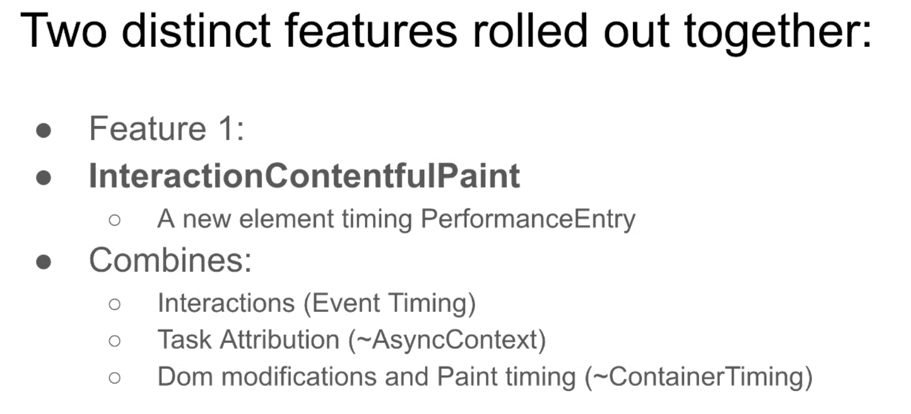
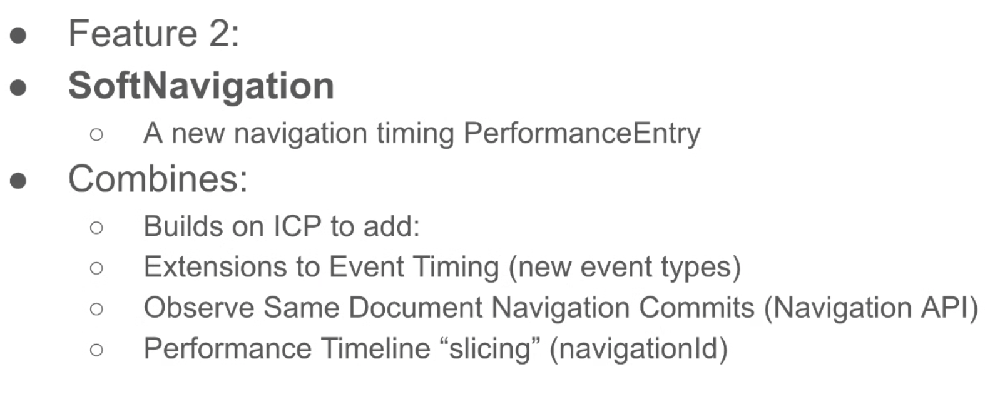
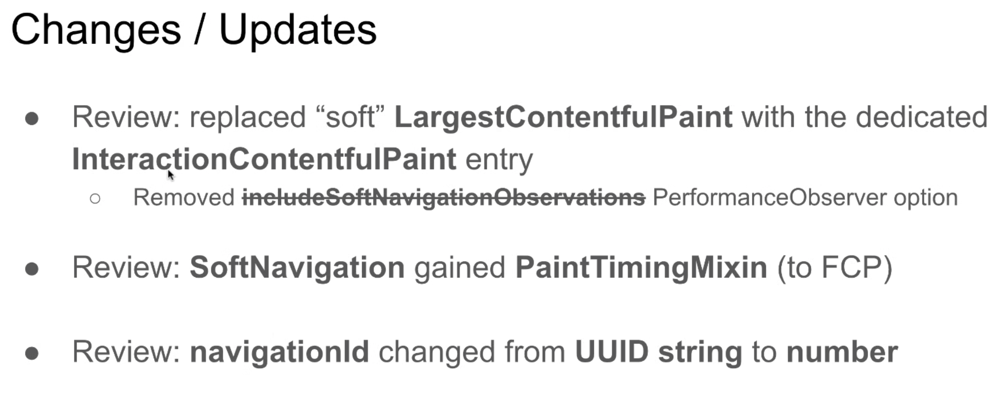
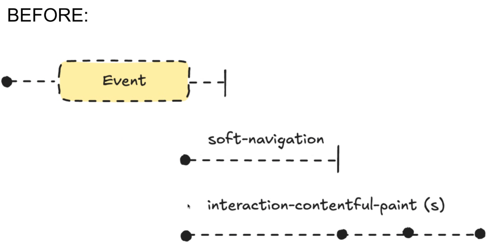
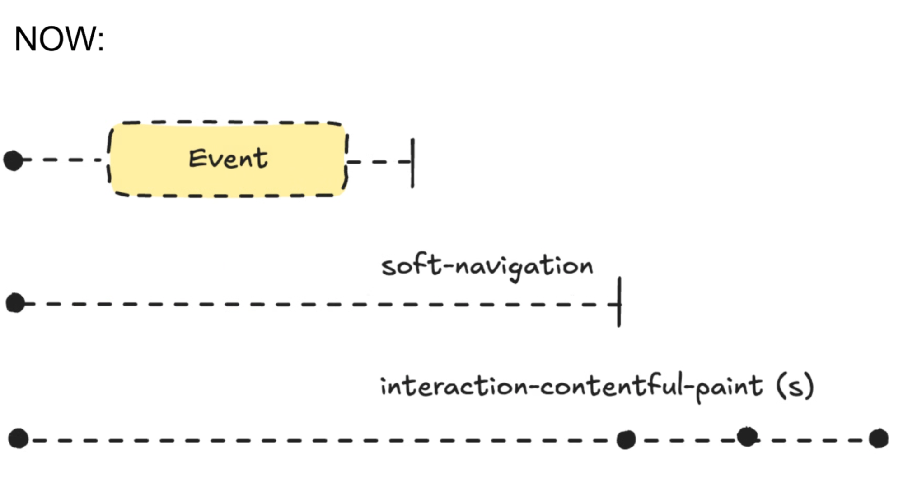
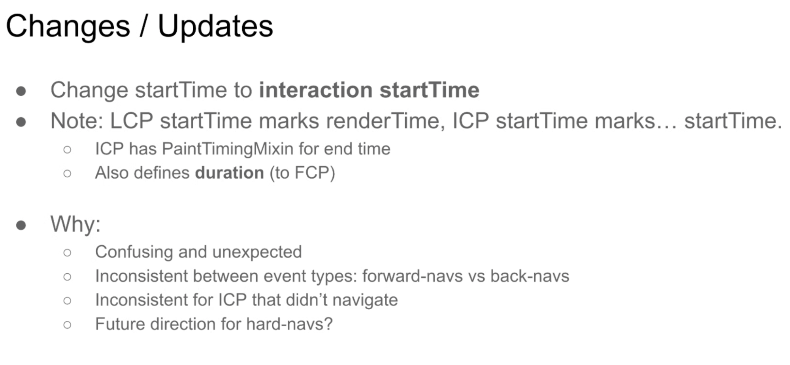
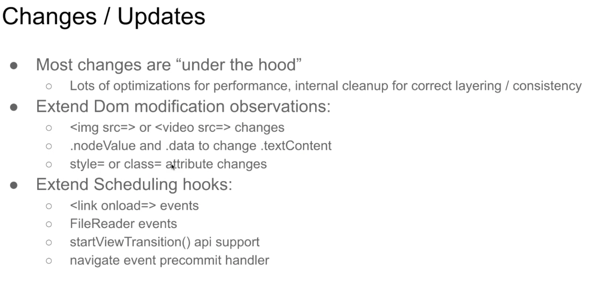
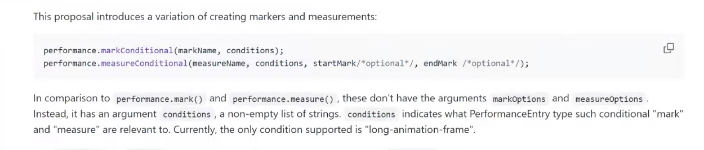
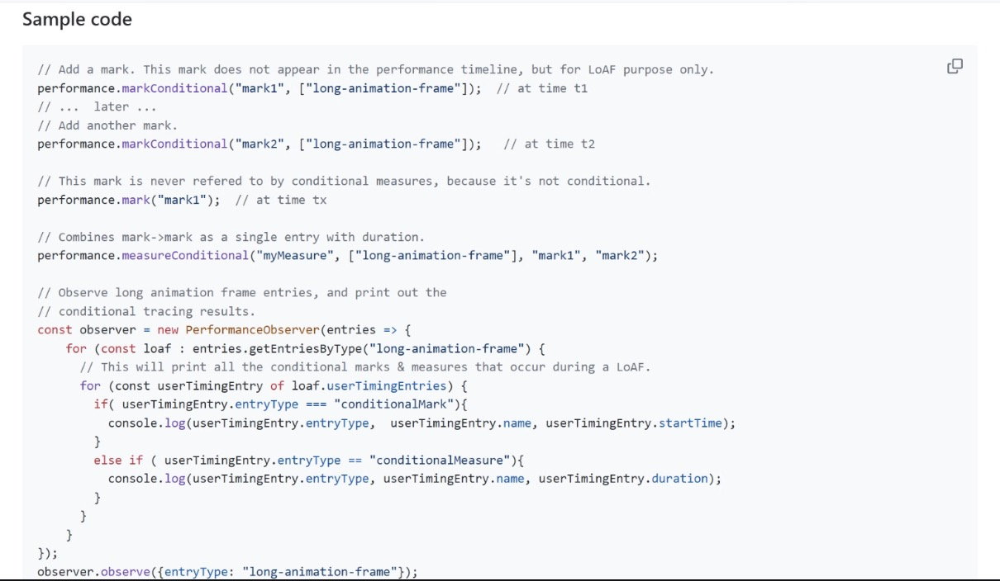
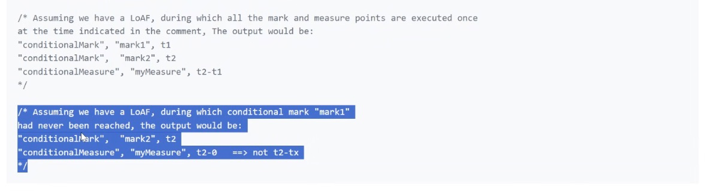

Participants
Franco Viera de Souza, Yoav Weiss, Michal Mocny, Noam Rosenthal, Patrick Meenan, Gouhui Deng, Scott Haseley, Nic Jansma, Amiya Gupta, Barry Pollard, Jason Williams, Joone Hur, Leon Brocard
Admin
- Franco: don’t want to couple this with Layout Shift’s threshold
Minutes
- Michal: adding perf APIs on soft navigation. About to start a new OT, so wanted to update the group.
- ..

height: 271.96px; margin-left: 0.00px; margin-top: 0.00px; transform: rotate(0.00rad) translateZ(0px); -webkit-transform: rotate(0.00rad) translateZ(0px);" title=""> - …

height: 229.01px; margin-left: 0.00px; margin-top: 0.00px; transform: rotate(0.00rad) translateZ(0px); -webkit-transform: rotate(0.00rad) translateZ(0px);" title=""> - …<demo>
- … This is v2 of the API, about to extend that OT
- … expecting to ship in Q3, once the OT is over
- …

height: 238.83px; margin-left: 0.00px; margin-top: 0.00px; transform: rotate(0.00rad) translateZ(0px); -webkit-transform: rotate(0.00rad) translateZ(0px);" title=""> - … Decoupled from soft navs, means that ICP entries are reported on all interactions, even if they don’t soft navigate
- … Could also be useful outside of soft navigation
- … useful for INP: shows the effect of the interaction
- … It was also coupled with Event Timing, to match INP
- … Extended event timing for that purpose
- … Extended ET to observe navigate, popstate and hashchange events, but they won’t immediately expose ET entries (behind a flag for now)
- …InteractionId added to both

height: 286.16px; margin-left: 0.00px; margin-top: 0.00px; transform: rotate(0.00rad) translateZ(0px); -webkit-transform: rotate(0.00rad) translateZ(0px);" title="">
height: 334.73px; margin-left: 0.00px; margin-top: 0.00px; transform: rotate(0.00rad) translateZ(0px); -webkit-transform: rotate(0.00rad) translateZ(0px);" title="">- … Original motivation was to be more consistent with hard navigation

height: 296.07px; margin-left: 0.00px; margin-top: 0.00px; transform: rotate(0.00rad) translateZ(0px); -webkit-transform: rotate(0.00rad) translateZ(0px);" title="">
- … Added support for replaceState - initially assumed that it’s not “real navigations”, but OT feedback said otherwise
- … Added navigationType to soft navs (push, replace, traverse)
- … new lab tooling integration, perf tracing, HUD
- … Lots of perf optimizations under the hood

height: 261.56px; margin-left: 0.00px; margin-top: 0.00px; transform: rotate(0.00rad) translateZ(0px); -webkit-transform: rotate(0.00rad) translateZ(0px);" title="">- .. Added a link in the navigation timing entry to the largest related ICP
- .. Considering consolidating navigationId with interactionId
- … Considering exposing the previous URL
- … Also considering exposing the relevant Event Timing entry as well
- … ICP only fires when there’s a new largest element, but could report any visual update
- … ICP currently stops on interaction or scroll, but now it’s possible to drop that and track all paints
- Bas: It generally makes sense. If you have an interaction and then another, do they start two new streams of ICPs?
- Michal: If you interact once and again, both are tracking scheduling. As soon as a paint starts, we’ll stop tracking the other.
- … If I click two links and they are both waiting on network, we want to support that. But once paint starts, we’d track those paints.
- Scott: We prototyped doing that, and it works well. Need to define what we want in these scenarios
- Bas: If we did “ICP reports any paint” then you might as well do the same for LCP, which would become CP
- Michal: I don’t disagree
- Bas: During the implementation of DOM tracking you mentioned changes. Did you measure the performance impact of the book-keeping impact on performance?
- Michal: We tried to create O(1) cost. Interaction that updates the whole DOM would have a certain cost, but a 1000 interactions would have a similar cost
- … No perf regressions for single expensive interactions
- … Use “container timing” but it’s an opt-in mechanism, here we’re tracking everything so made different trade-offs
- … Instead of walking the DOM, we cluster changes and compute them lazily
- Scott: Early versions had overhead and we iterated and reduced that down
- … When you modify a node, we taint and later catch that during tree walk
- … We can document what we did here
- Michal: Good coverage (~90%) of use cases devs actually use
- … logs are linked in the slides
- … Devtools integration only shows soft navigations as a start marker, but it doesn’t show interactions and following paints
Conditional tracing as a LoAF extension - Guohui
- Guohui: Noam presented at TPAC 25
- … wrapper problem
- … LoAF did not only report long animation frames, but also the root problems
- … Reports on script entry point (e.g. event handler)
- … For async frameworks, like React, which has a wrapper of event handlers
- … Script only points to very top of the function call, so people see React wrapper
- … Idea is to provide a tool for developer to look deeper for cause of LoAF
- … Extend UserTiming API to make a better situation
- … Diagnostics tool to solve this problem
- … Could help with other PerformanceEntry like timing entries

height: 268.00px; margin-left: 0.00px; margin-top: 0.00px; transform: rotate(0.00rad) translateZ(0px); -webkit-transform: rotate(0.00rad) translateZ(0px);" title="">- … Proposal: markConditional, measureConditional
- … (do not contain the markOptions or measureOptions)
- … These will not appear in a global timeline, just for special purpose
- … Another difference is in measure(), there is a start and end marks. In the original, they look for global performance timeline, and previous mark point. Here, we say the start mark and end mark refers to mark points of same condition (not global)
- … Since they don't appear in global timeline, they are not for general PerformanceEntry, they're for LoAF only
- … Cannot be retrieved by observer for these entries
- … They're only included if they happened during the LoAF
- … When animation frame measurement starts, we collect those points. If not needed, we clear those buffers. If it's a LoAF we include those points.

height: 704.00px; margin-left: 0.00px; margin-top: 0.00px; transform: rotate(0.00rad) translateZ(0px); -webkit-transform: rotate(0.00rad) translateZ(0px);" title="">- … Sample code

height: 320.00px; margin-left: 0.00px; margin-top: 0.00px; transform: rotate(0.00rad) translateZ(0px); -webkit-transform: rotate(0.00rad) translateZ(0px);" title="">- … Alternatives we considered
- … User Defined Script Entry Point (UDSEP) is more complicated, it includes microtask from event handler. The complexity exceeds what we expected.
- … We could extend this to other timings, maybe Element Timing. For now we're focused on LoAF
- Jacob: I like the idea. Currently I add perf.mark for mousedown/up, hover etc. just for the single purpose of knowing what is (or might be) related to a LoAF (for example expensive hover animations before a click).
- Michal: I will say people have tried to use marks/measures historically
- … It's been expensive, we've seen from profiling, API design was for writing and reading from a buffer
- … I think this type of API would be useful to include marks and such in places, ideally not enabled by default
- … Then effectively sampled
- … I think some of the design here is flexible, seems valuable, but needs to be traded off for profiling, to make as simple as possible, and conditionally measure
- … Would be good to consider what is the simplest scope implementation
- Guogui: Motivation of this is to make it more efficient for application
- … mark and measure causes a lot of data to be collected, application needs to compress/etc, and still needs to figure out what points are associated with the LoAF and whatnot.
- Noam: Reason why you don't see details argument in this proposal, is it's deliberate to remove overhead of both recording and buffering them. Whole proposal is about efficiency of Performance Timeline itself. Could do everything with vanilla User Timing, but would be less efficient.
- Michal: Some things that pop out, are you still create separate marks and times/strings, I think the easiest thing you think of, is you create a mark and mark as ended. Little things could be done to be more ergonomic, and possibly more efficient.
- Guohui: Only marks and not measures?
- Michal: No, measures are most important. But you could create a span and end it by reference of a shared object. When you end it, you don't have to look up a string value in a map somewhere. E.g. small optimizations.
- … Last thought, I can see tracing example. Is this for LoAF entry points so all wrappers make it easier?
- Guohui: Application that wants to annotate their code
- … Simplest use-cases is they put a mark in application event handler, on top, before it's passed to wrapper
- … When they see the script entry point (React), they can see the mark and know which handler it is
- Yoav: Bottom of stack is supposed to annotate before handling off function to whatever is wrapping it
- Guohui: Answer to wrapper problem
- Yoav: In terms of adoption, we'd expect applications and individual sites to adopt this, and not react/RUM
- Michal: If I call addEventListener on my page on my script, I expect LoAF report when my script is long running
- … But if some wrapper is wrapping AEL, I don't necessarily know that
- … But I could now add this type of annotation around calls, but a lot of potential touch points to annotate
- … Would think wrapper could do this.
- … Don't know how hard wrapper is to do that.
- Yoav: Would help adoption if wrappers can do this
- Guohui: Library could adopt this too, wrapper fn could add a conditional mark where the function name of what it wraps.
- Nic: want a combination of the thing it’s listening for and the thing it’s wrapping
- Guohui: e.g. “react called this handler”. Then LoAF would indicate which event handler was actually running
- Nic: So giving an annotation of the environment by adding a mark name
- Guohui: indicating which function is running
- Yoav: This is all time-based, so if you have multiple different things happening, one mark signaled here and elsewhere, you can't really use it beyond the scope of tasks and microtasks
- Guohui: If we hit the mark, we'll put the entry there.
- Yoav: If I add a mark in one place then another place, and both of them after a microtask or task pop, a LoAF happens would have both marks. Regardless of which one triggered the LoAF.
- … If you have mark and end happening in same task, then you're guaranteeing any LoAF between the two will have the right mark. But if you're jumping between tasks, you'll have both
- Guohui: Doesn't matter if task or microtasks. LoAF can have both. Ends either at point where we need to paint, or if paint is completed.
- … Look for most recent mark in this buffer, if we find it, we use that time, otherwise the timing is zero.
- … Difference is that we don't look at non-conditional marks. Second, this buffer is cleared every time an animation frame is started. So conditional marks from previous animation frame doesn't come, it disappears.
- Michal: If you're going to automatically be clearing with each animation frame boundary, you may as well clear with each task boundary. Make it stack-based.
- … Basically say for this scope for this stack, this starts/ends a new timing
- … Could say in the whole animation frame there were scripts related to these features
- … Part of stack could trigger the feature
- … Doing local-only scoped timings, I don't see if I see the value on resetting each animation frame
- Guohui: Maybe we don't need measureConditional() and we can just use markConditional() at first
- Scott: RE: Yoav, if you have an async function, and you put a mark at the beginning of the event listener handler, then await, then the developer needs to put another mark after each await.
- … That's the tradeoff between this approach and some of the alternatives?
- Guohui: Exactly
- Yoav: Another alternative to consider is task attribution
- Scott: Problem with this vs. task attribution, it's great when you poll, but you need to know on boundaries start/stop that we have data we care about, performance overhead consideration
- … We've talked about ways to make that faster perhaps
- Guohui: Much more complicated, as a web app developer, it's harder to understand the timing that's spent
- … User-defined entry point
- … Look to see if there's accounting
- … How much time in each event handler it takes
- … Feedback can be added to https://github.com/w3c/long-animation-frames/issues/3